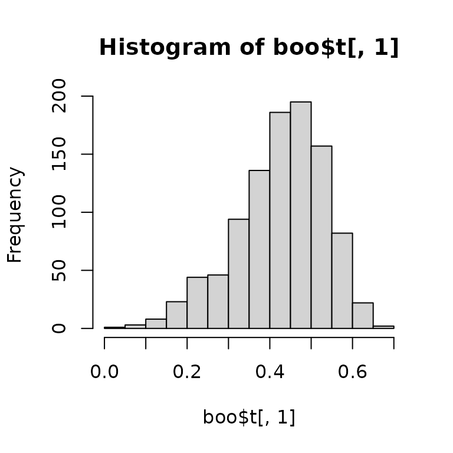
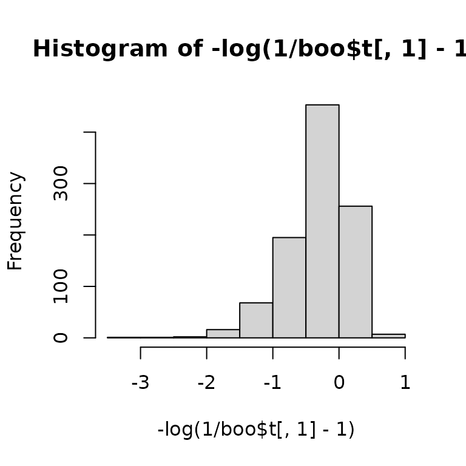

Using Multilevel Bootstrap for Derived Quantities
Mark Lai
2026-05-05
Source:vignettes/derived_quantities.Rmd
derived_quantities.RmdData
Here I use a synthetic dataset (pop_syn) bundled with
the package, which mimics the structure of the example data in Hox
(2010, p. 17). The synthetic data was generated from parameters
estimated from the original popular dataset.
For the interest of time, I will select only 20 schools and a few students in each school:
set.seed(85957)
pop_sub <- pop_syn |> filter(school %in% sample(unique(school), 20)) |>
group_by(school) |> sample_frac(size = .25) |> ungroup()To illustrate doing bootstrapping to obtain standard error
(SE) and confidence interval (CI) for the intraclass
correlation (ICC) of the variable popular, we first fit an
intercept only model:
## Linear mixed model fit by REML ['lmerMod']
## Formula: popular ~ (1 | school)
## Data: pop_sub
##
## REML criterion at convergence: 300.2
##
## Scaled residuals:
## Min 1Q Median 3Q Max
## -2.2515 -0.7290 0.1010 0.6254 2.1197
##
## Random effects:
## Groups Name Variance Std.Dev.
## school (Intercept) 0.6116 0.7820
## Residual 0.7181 0.8474
## Number of obs: 106, groups: school, 20
##
## Fixed effects:
## Estimate Std. Error t value
## (Intercept) 5.3679 0.1935 27.74The intraclass correlation is defined as
where
is the relative cholesky factor for the random intercept term used in
lme4. Therefore, we can estimate the ICC as:
(icc0 <- 1 / (1 + getME(m0, "theta")^(-2)))## school.(Intercept)
## 0.4599417So the ICC is quite large for this data set. However, it is important to also quantify the uncertainty of a point estimate. We can get the asymptotic standard error (ASE) of the ICC using the delta method:
# Get the point estimate of theta:
th_est <- getME(m0, "theta")
# Get the variance of theta using the bootmlm::vcov_theta() function
th_var <- bootmlm::vcov_theta(m0)
# We can get the asymptotic variance of ICC using delta method with an
# appropriate transformation. `x1` is the variable name needed for the first
# variable, which is theta in our case
icc_avar <- msm::deltamethod(g = ~ 1 / (1 + x1^(-2)),
mean = th_est, cov = th_var, ses = FALSE)So we can get an approximate symmetric CI with
## Warning in c(-2, 2) * sqrt(icc_avar): Recycling array of length 1 in vector-array arithmetic is deprecated.
## Use c() or as.vector() instead.## [1] 0.2436891 0.6761944Bootstrap- CI
icc <- function(x) {
th_est <- x@theta
est <- 1 / (1 + th_est^(-2))
th_var <- vcov_theta(x)
var <- msm::deltamethod(g = ~ 1 / (1 + x1^(-2)),
mean = th_est, cov = th_var, ses = FALSE)
c(est, var)
}
icc(m0)## [1] 0.4599417 0.0116913
# These heavy computations are not run live on CRAN, but you can run them locally.
boo <- bootstrap_mer(m0, icc, 999L, type = "case")
# Influence values for BCa
inf_val <- empinf_mer(m0, icc, index = 1)
# boo and inf_val are pre-loaded in this vignette
boot::boot.ci(boo, L = inf_val)## BOOTSTRAP CONFIDENCE INTERVAL CALCULATIONS
## Based on 999 bootstrap replicates
##
## CALL :
## boot::boot.ci(boot.out = boo, L = inf_val)
##
## Intervals :
## Level Normal Basic Studentized
## 95% ( 0.2848, 0.7027 ) ( 0.3200, 0.7277 ) ( 0.3036, 0.7531 )
##
## Level Percentile BCa
## 95% ( 0.1922, 0.5999 ) ( 0.2537, 0.6319 )
## Calculations and Intervals on Original Scale
## Some BCa intervals may be unstableOn a Transformed Scale
Because ICC is bounded between and 1, and commonly between 0 and 1, a potentially better approach to construct a confidence interval for ICC is to first transform it so that the sampling distribution is closer to normal. As stated in Ukoumunne, Davison, Gulliford, and Chinn (2003), one can use apply a transformation:
You can compare the distribution before and after transformation:
hist(boo$t[ , 1])

One can obtain the CI on the transformed scale, and then scale it back to the original ICC scale:
boot::boot.ci(boo, L = inf_val, h = qlogis,
hdot = function(x) 1 / (x - x^2),
hinv = plogis)## BOOTSTRAP CONFIDENCE INTERVAL CALCULATIONS
## Based on 999 bootstrap replicates
##
## CALL :
## boot::boot.ci(boot.out = boo, L = inf_val, h = qlogis, hdot = function(x) 1/(x -
## x^2), hinv = plogis)
##
## Intervals :
## Level Normal Basic Studentized
## 95% ( 0.2791, 0.7209 ) ( 0.3260, 0.7530 ) ( 0.3163, 0.6692 )
##
## Level Percentile BCa
## 95% ( 0.1922, 0.5999 ) ( 0.2537, 0.6319 )
## Calculations on Transformed Scale; Intervals on Original Scale
## Some BCa intervals may be unstableNote: Percentile and BCa intervals are invariant to 1-1 transformation.